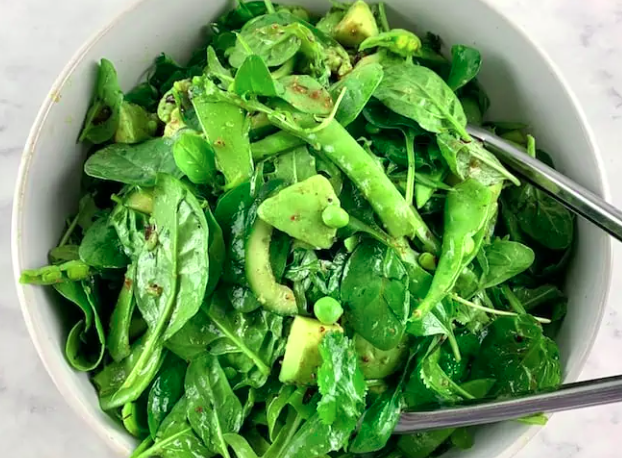
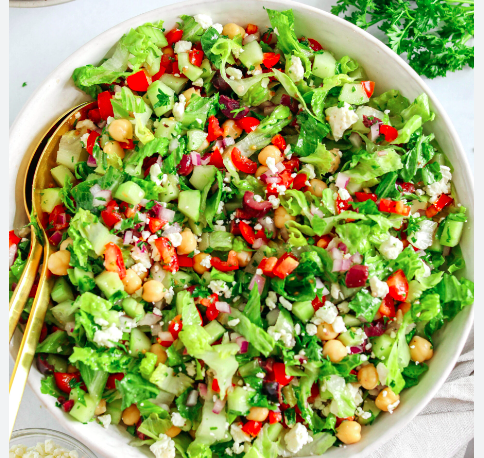
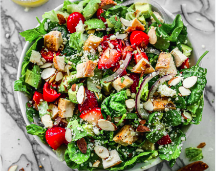
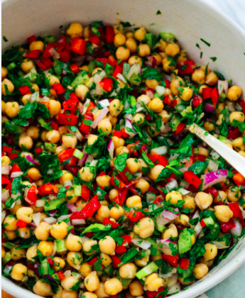
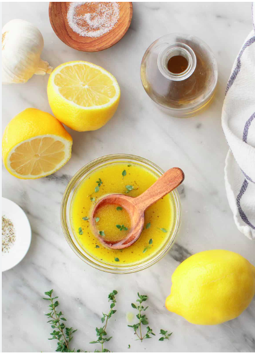
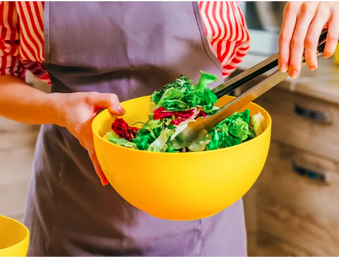
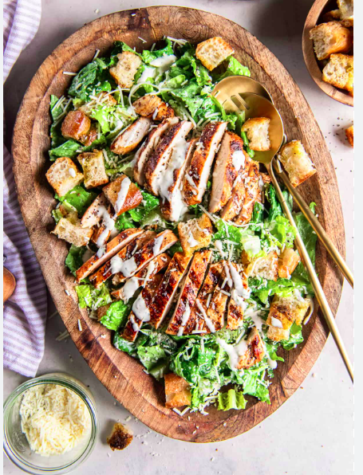

Salad Images
Home
Ingredients
Dressing
Directions

Step 1: Mixing greens and spinach

Step 2: Adding vegetables

Step 3: Adding protein

Step 4: Adding toppings

Step 5: Preparing dressing

Step 6: Tossing salad

Step 7: Plating salad